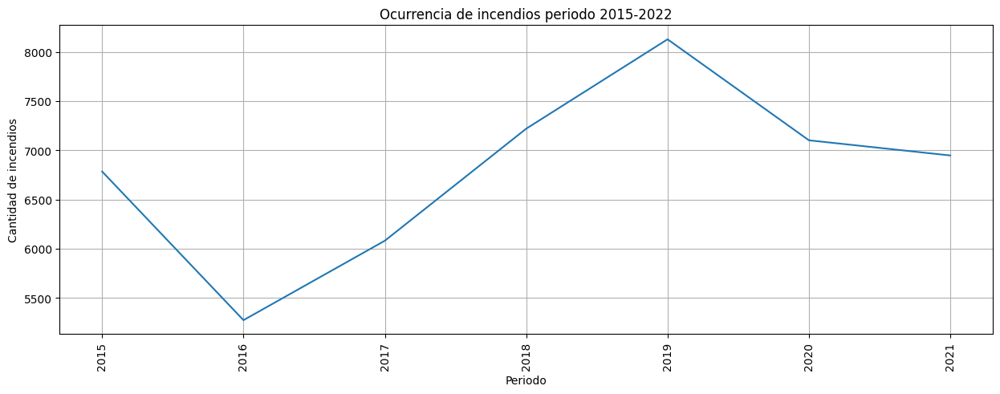
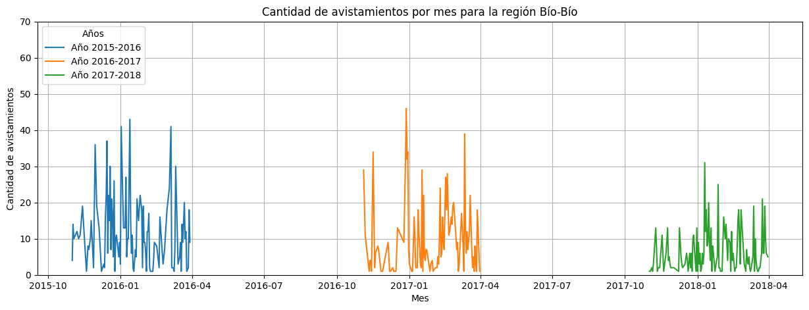

Objetivos
El propósito central de este proyecto radica en analizar el comportamiento de las aves avistadas en los
territorios chilenos
en relación con los incendios que han afectado al país, así como la irrupción de la pandemia, durante el
período comprendido
entre 2015 y 2020. La finalidad es destacar la importancia de comprender cómo estos eventos inciden en
las poblaciones de
aves, su hábitat y su dinámica ecológica. Asimismo, se busca fomentar la adopción de medidas de
conservación y un manejo
adecuado de los ecosistemas en respuesta a este contexto de cambio ambiental y sanitario.
Datos
Para llevar a cabo este proyecto, aprovecharemos la API proporcionada por
eBird. Utilizamos esta interfaz para obtener datos
sobre avistamientos de aves en territorio chileno desde 2015 hasta 2022, incluyendo información sobre la
taxonomía de las
aves y las ubicaciones específicas donde se realizaron los avistamientos. Además, disponemos de un
conjunto de datos que
contiene información sobre los incendios registrados en nuestro país.
Ver
Relación entre frecuencia y daños de incendios

Como podemos apreciar, a pesar de existir una ocurrencia de incendios muy baja entre los años 2015-2018,
los daños generados por estos incendios son muy altos, por lo que podemos concluir que los incendios que
ocurrieron en estos años fueron de gran magnitud. Más específicamente, podemos ver que el año 2016 fue
el año con mayor cantidad de incendios y con mayor daño generado por estos, siendo las regiones más
afectadas la región del Maule y la región de O'Higgins, junto con la región del Biobío, por lo que éstos
serán los focos de nuestro análisis.
Causales de incendios
Como podemos apreciar, la principal causa de incendios en Chile es de carácter accidental, seguido por
la causa intencional, por lo que podemos concluir que la mayoría de los incendios en Chile son causados
por el ser humano, algo que pudo haber sido completamente evitable.
Inicialmente, es interesante observar que la mayoría de los incendios provocados fueron atribuibles a
actividades humanas, en lugar de causas naturales. Estos datos sugieren que, en muchos casos, la
responsabilidad de los incendios recae directamente en las acciones humanas, lo que plantea la cuestión
de la relación entre el cambio climático y las actividades humanas, siendo estas últimas un factor
determinante en la ocurrencia de incendios.
Durante el periodo 2016-2017, se registró uno de los eventos de incendio forestal más extensos en
términos de superficie (de hecho, fue dada a conocer como una tormenta de fuego). Aunque la cantidad
total de incendios puede no haber sido significativa, la magnitud y el impacto medioambiental de este
suceso fueron notables. Este incidente destacó por su gran tamaño y consecuencias ambientales
significativas.
Centrándonos en el impacto medioambiental, es evidente que eventos de gran amplitud, como el ya
mencionado, pueden influir en el comportamiento y la diversidad de las aves en la región(es) afectada.
La presencia de incendios a gran escala puede alterar tanto el comportamiento como el tipo de aves
avistadas en esa área. Esto se debe a que las aves se ven obligadas a emigrar hacia otras zonas para
garantizar su supervivencia, o lamentablemente, algunas pueden perecer como resultado del incendio.
En un sentido más general, cada vez que se produce un incendio en una región específica, se observa un
impacto directo en la cantidad y diversidad de aves presentes en ese entorno. Este fenómeno subraya la
estrecha interconexión entre los incendios forestales y la vida silvestre, evidenciando la necesidad de
abordar y gestionar adecuadamente estos eventos para preservar la biodiversidad y el equilibrio
ecológico.
Avistamientos diarios entre Noviembre y Febrero de 2015 a 2018

Analizando los gráficos por mes y relacionados con cada una de las regiones, podemos ver que existe una
disminución de avistamientos de aves en el mes de enero para el año 2017, esto se puede deber a que en
este mes se produjo uno de los incendios forestales más grande de la historia de Chile, el cual afectó
principalmente a las regiones de O'Higgins, Maule y BioBio, por lo que podemos concluir que los
incendios forestales afectan directamente a la cantidad de aves avistadas en Chile.
Para hacer la comparación tomaremos las aves promedio avistadas en el año anterior y posterior a los
incendios, para ver si hubo una disminución o aumento de aves avistadas en las regiones afectadas.
Prediccion 2023
En el modelo hecho, tratamos de predecir la cantidad de aves para el 2023, pero lamentablemente no
contabamos con la informacion suficiente para predecir con exactitud, por lo que solo pudimos predecir
con los datos que teniamos, y como podemos ver, la prediccion es que el 2023 sera un año normal, con una
cantidad de aves similar a la de los años anteriores.
¿La frecuencia de avistamientos de aves, o la cantidad de especies varió con los incendios?
Principalmente analizaremos con la cantidad de avistamientos de aves en Chile, y veremos si existe una
relación entre la cantidad de avistamientos y la cantidad de incendios o la superficie quemada.
Como las regiones mas afectadas fueron las de O'Higgins, Maule y BioBio, nos enfocaremos en estas para
hacer
el estudio de cantidad de aves avistadas, haciendo el contraste con el anho 2016 y 2018, respecto a
2017,
especificamente los meses de noviembre y marzo
¿Qué especies de aves se ven más y menos afectadas con los incendios?
Las aves que se vieron mas afectadas fueron aves marinas, esto sucede porque efecto de los incendios, las
masas de aguas se contaminan, las cuales desembocan en el mar contaminando los peces, los cuales son las
principal fuente de alimentacion de las aves, por lo tanto estas tienen que migrar hacia otros lados
para no intoxicarse
¿La frecuencia de avistamientos de aves, o la cantidad de especies varió con la pandemia?
Sí, la frecuencia de avistamientos de aves varío con la pandemia, debido a la disminucion de la
actividad humana que llevo a la reduccion de contaminacion, lo que creo un entorno mucho mas favorable
para las aves.
¿Qué especies de aves se ven más y menos afectadas?
Durante el periodo de incendios podemos observar que las aves más afectadas de manera significativa
negativamente, es decir, diminuyo la cantidad de visualizaciones, es Pelecanoides Gamotii y Anas
georgica, mientras que aquellas aves que se vieron afectadas positivamente, es decir, aumento su
cantidad de visualizaciones, es Ardena grisea y Ardena creatopus, las cuales crecieron mucho más que con
respecto a la cantidad de disminución de aves.
¿Existe algún(os) tipo(s) de ave(s) que en base a estas problemáticas pueden estar en peligro de
extinción?
No podemos llegar a aclarar si efectivamente una especie podría llegar a estar en peligro de extinción
ya que no contamos con la suficiente información ni conocimiento necesario para determinar si alguna
especie podría estarlo. En base a esto, la presencia de un experto (o la colaboración) harían llegar la
respuesta a esta pregunta.